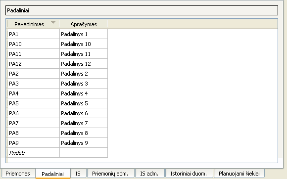

Naudojantis šia sąsaja, galima:
- Pridėti naują padalinį paspaudus apatinę lentelės eilutę „Pridėti“ bei suvedus reikiamus duomenis;
- Ištrinti vieną ar kelis padalinius juos pažymėjus, atidarius kontekstinį meniu ir paspaudus įrašą „Pašalinti“;
- Ištrinti vieną ar kelis padalinius juos pažymėjus ir paspaudus Vald+-;
- Pakeisti padalinio informaciją dukart spustelėjus ant lauko, kurį norima pakeisti.
